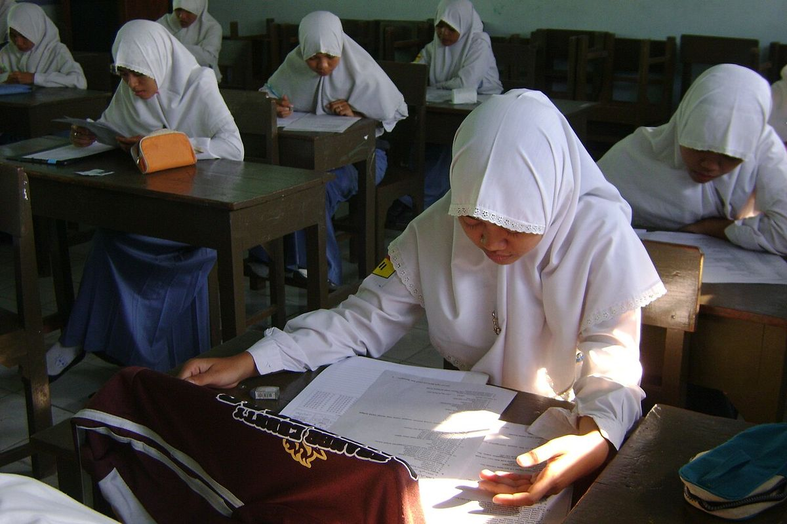

Kamu bisa cek status PIP November 2026 lewat situs resmi SIPINTAR di pip.kemendikdasmen.go.id. Siapkan NISN dan NIK siswa, buka menu Cari Penerima PIP, isi kedua nomor itu, jawab kode verifikasi, lalu klik Cek Penerima PIP. Hasilnya langsung muncul: nama siswa, jenjang, dan status bantuannya.
Artikel ini menjelaskan langkah ceknya, arti statusnya, dan besaran dananya per November 2026.
Cara ceknya singkat: buka pip.kemendikdasmen.go.id, masukkan NISN dan NIK, jawab kode verifikasi, lalu klik Cek Penerima PIP. PIP adalah bantuan pendidikan dari pemerintah untuk siswa dari keluarga miskin atau rentan miskin, dari jenjang TK sampai SMA atau SMK. Per November 2026, penyaluran PIP masuk termin III untuk periode Oktober sampai Desember 2026, dan pengusulan penerima Fase II 2026 sudah ditutup pada 6 November 2026, jadi status di SIPINTAR sekarang sudah bisa dicek dan terus diperbarui sesudah verifikasi selesai. Pengecekan dilakukan mandiri lewat HP atau laptop, gratis, dan tidak meminta PIN, OTP, atau uang apa pun. Yang kamu butuhkan hanya NISN siswa, yang biasanya tercantum di rapor atau kartu NISN, dan NIK siswa sesuai Kartu Keluarga. Kalau anakmu sekolah di madrasah, jalurnya berbeda: cek lewat SIPMA Kemenag di pip.kemenag.go.id. Hasil cek menampilkan dua status penting. SK Nominasi berarti siswa tercatat sebagai calon penerima dan biasanya masih perlu aktivasi rekening. SK Pemberian berarti dana sudah atau siap dicairkan ke rekening penyalur.
Siapkan dulu NISN dan NIK-nya
Sebelum buka situsnya, siapkan dua nomor ini. NISN adalah Nomor Induk Siswa Nasional, nomor identitas siswa yang diterbitkan Kemendikdasmen. Kamu bisa menemukannya di rapor, kartu NISN, atau dengan bertanya ke operator sekolah. NIK adalah Nomor Induk Kependudukan siswa, 16 digit sesuai Kartu Keluarga. Pastikan keduanya diketik persis seperti di dokumen, karena satu angka salah saja bisa membuat data tidak ditemukan. Kalau kamu belum tahu NISN anakmu, cek dulu lewat panduan cek NISN, lalu kembali ke sini.
Foto: Shixart1985, CC BY 2.0, via Wikimedia Commons
Bagaimana cara cek PIP November 2026 di SIPINTAR?
Langkah-langkahnya begini.
- Buka browser di HP atau laptop, lalu kunjungi pip.kemendikdasmen.go.id.
- Cari menu Cari Penerima PIP di halaman utama, biasanya di bagian bawah.
- Masukkan NISN siswa pada kolom pertama.
- Masukkan NIK siswa pada kolom kedua.
- Isi kode verifikasi atau jawab soal hitung sederhana yang muncul di layar.
- Klik tombol Cek Penerima PIP.
- Tunggu sebentar sampai sistem menampilkan hasilnya.
Kalau datanya cocok, layar menampilkan nama siswa, jenjang pendidikan, status penerimaan, dan informasi pencairan bila ada. Seluruh proses ini gratis. Situs resmi tidak pernah meminta PIN, kata sandi, OTP, atau transfer uang. Kalau ada pihak yang menghubungimu lewat WhatsApp atau tautan lain dan meminta data atau bayaran dengan alasan PIP, abaikan saja, itu bukan jalur resmi. Simpan hasil cek sebagai tangkapan layar supaya gampang ditunjukkan ke pihak sekolah bila perlu.
Apa arti SK Nominasi dan SK Pemberian?
Dua istilah ini paling sering membingungkan. SK Nominasi berarti siswa sudah tercatat sebagai calon penerima PIP, tapi dananya belum bisa cair. Biasanya siswa masih perlu aktivasi rekening di bank penyalur sesuai petunjuk dari sekolah. Jangan lewatkan tahap ini, karena tanpa aktivasi, dana tidak bisa masuk. SK Pemberian berarti siswa sudah ditetapkan sebagai penerima dan dana sudah atau siap dicairkan. Kalau statusmu SK Pemberian tapi dana belum masuk rekening, cek lagi rekening penyalur yang terdaftar dan tanyakan ke pihak sekolah. Status di SIPINTAR adalah acuan utama, jadi cek berkala bila statusmu masih berubah sesudah verifikasi Fase II selesai.

Foto: nugroho khoironi, CC BY-SA 2.0, via Wikimedia Commons
Berapa dana PIP 2026 untuk tiap jenjang?
Besaran bantuan PIP 2026 diatur dalam Keputusan Menteri Pendidikan Dasar dan Menengah Nomor 171 Tahun 2026 dan dibayarkan per semester. Untuk TK, SD, SDLB, dan Paket A, bantuannya Rp225.000 per semester atau Rp450.000 per tahun. Untuk SMP, SMPLB, dan Paket B, Rp375.000 per semester atau Rp750.000 per tahun. Untuk SMA, SMALB, SMK, dan Paket C, Rp900.000 per semester atau Rp1.800.000 per tahun. Perlu dicatat, siswa baru dan siswa kelas akhir bisa menerima kurang dari angka penuh, tergantung periode bantuan dalam tahun anggaran. Bank penyalurnya juga sudah ditetapkan: BRI untuk jenjang SD dan SMP, BNI untuk SMA dan SMK, dan BSI untuk seluruh jenjang di Provinsi Aceh.
Siswa madrasah cek lewat mana?
Kalau anakmu sekolah di madrasah di bawah Kementerian Agama, jangan cek di SIPINTAR Kemendikdasmen. Gunakan layanan SIPMA Kemenag di pip.kemenag.go.id, lalu pilih menu Cek Penerima PIP dan masukkan NIK dan NISN seperti biasa. Jalur ini terpisah karena data siswa madrasah dikelola Kemenag, bukan Kemendikdasmen. Pastikan alamat situsnya benar sebelum memasukkan data apa pun.
Kalau data tidak ditemukan, apa yang harus dilakukan?
Pertama, periksa lagi ketikan NISN dan NIK, lalu pastikan kode verifikasi diisi dengan benar. Kedua, ingat bahwa pengusulan calon penerima dilakukan oleh sekolah dan dinas pendidikan lewat SIPINTAR, bukan oleh orang tua secara mandiri. Jadi kalau namamu belum muncul, kemungkinan datanya belum diusulkan, belum diperbarui sekolah, atau siswa memang belum terdaftar sebagai penerima pada periode ini. Ketiga, tanyakan ke operator sekolah atau guru wali kelas, karena merekalah yang mengusulkan data siswa ke dinas pendidikan. Keempat, waspadai situs tiruan. Cek PIP hanya di pip.kemendikdasmen.go.id untuk sekolah umum dan pip.kemenag.go.id untuk madrasah. Jangan pernah memasukkan NISN, NIK, atau OTP ke situs lain yang mengaku bisa mempercepat pencairan.
Foto: Shixart1985, CC BY 2.0, via Wikimedia Commons
Intinya, cek PIP November 2026 itu cepat: siapkan NISN dan NIK, buka SIPINTAR, dan baca statusnya. Kalau statusnya SK Nominasi, segera urus aktivasi rekening lewat sekolah. Kalau SK Pemberian, pantau rekening penyalurmu. Dan kalau kamu masih bingung soal NISN, baca juga panduan cara cek NISN online supaya nomornya siap sebelum kamu cek PIP. Kalau kamu juga mengecek bantuan lain dari Kemensos, baca cara cek bansos lewat HP pakai NIK.
Baca juga: Cara Cek NISN Online Lewat Nama dan Nomor, Gratis dan Resmi dan Cara Cek Bansos Lewat HP Pakai NIK di Situs Resmi Kemensos, atau lihat artikel Other lainnya dan artikel riset lain di Blog.
Sumber dan Info Resmi
Fakta dan langkah di artikel ini merujuk ke sumber berikut:
- SIPINTAR Kemendikdasmen: situs resmi pengecekan PIP, alamat pip.kemendikdasmen.go.id dan menu Cari Penerima PIP.
- Romi Saputra: langkah cek PIP pakai NISN dan NIK, kode verifikasi, tombol Cek Penerima PIP, arti SK Nominasi dan SK Pemberian, serta jalur madrasah lewat pip.kemenag.go.id.
- Romi Saputra: pengusulan penerima PIP Fase II 2026, surat dinas ke Puslapdik paling lambat 6 November 2026, dan pengusulan oleh sekolah dan dinas pendidikan.
- BSI News: PIP termin III Oktober sampai Desember 2026, besaran bantuan mengacu Kepmendikdasmen Nomor 171 Tahun 2026, dan langkah cek SIPINTAR.
- ASIS: besaran PIP per semester dan per tahun tiap jenjang, Permendikdasmen Nomor 11 Tahun 2026, dan Kepmendikdasmen Nomor 171 Tahun 2026.
- Lima Pagi: pengusulan penerima PIP Fase II 15 sampai 22 Oktober 2026, tenggat 6 November 2026, dan bank penyalur BRI untuk SD dan SMP, BNI untuk SMA dan SMK, serta BSI untuk Aceh.
- Topik: langkah cek penerima PIP di pip.kemendikdasmen.go.id pakai NISN dan NIK, dan nominal bantuan per jenjang.
- Romi Saputra: pengecekan PIP gratis dan tidak meminta PIN, OTP, atau uang.